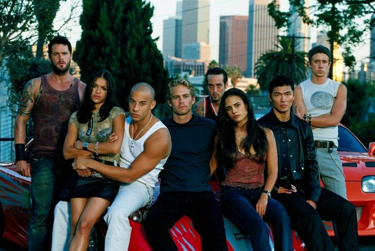
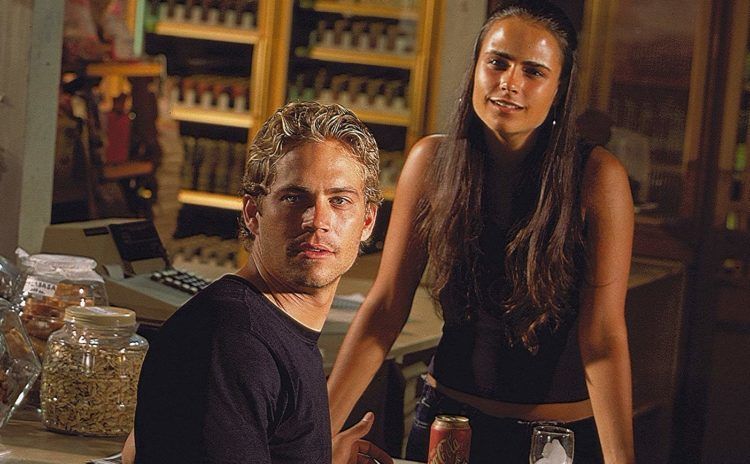

Velozes e furiosos 1
"Velozes e Furiosos" é um filme de ação lançado em 2001, dirigido por Rob Cohen. O filme é o primeiro da bem-sucedida franquia "Velozes e Furiosos". Aqui está um resumo do enredo: O protagonista, Dominic Toretto (interpretado por Vin Diesel), é o líder de uma gangue de corredores de rua em Los Angeles. Brian O'Conner (interpretado por Paul Walker) é um policial disfarçado que entra no mundo das corridas ilegais para investigar roubos de equipamentos eletrônicos realizados por corredores. Brian rapidamente se infiltra na cena de corridas ilegais e desenvolve uma amizade com Dom. Ele se aproxima de Mia Toretto (interpretada por Jordana Brewster), a irmã de Dom, e começa a se apaixonar por ela. Ao mesmo tempo, a polícia fecha o cerco sobre a gangue de Dom, suspeita de envolvimento nos roubos.
